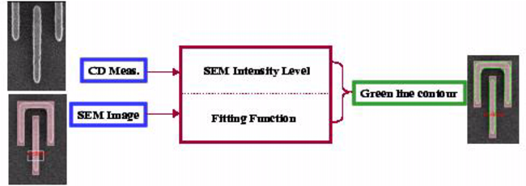
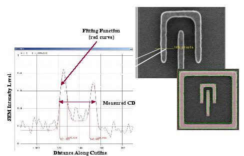

At this point,
the SEM image is still just an image. The next step is to extract
the image contour that corresponds to the print threshold.
Procedure
- In the SEM tab
of the Calibre SEMoverlay window, click Update.
The Calibre SEMoverlay tool
uses the CD measurement values and locations to extrapolate the
image intensity that corresponds to the printing threshold.
- Click Find.
Results
The SEMoverlay tool draws a contour
representing the printing contour.
The contour extraction algorithm uses
the intensity level calculated in Step 1 with a fitting function
to draw this contour, as shown in Figure 1.
Figure 1. SEM Contour Extraction
Figure 2 relates the intensity level and fitting
function to the actual SEM intensity level along a single cutline.
Figure 2. Visualizing Contour
Extraction at a Single Cutline